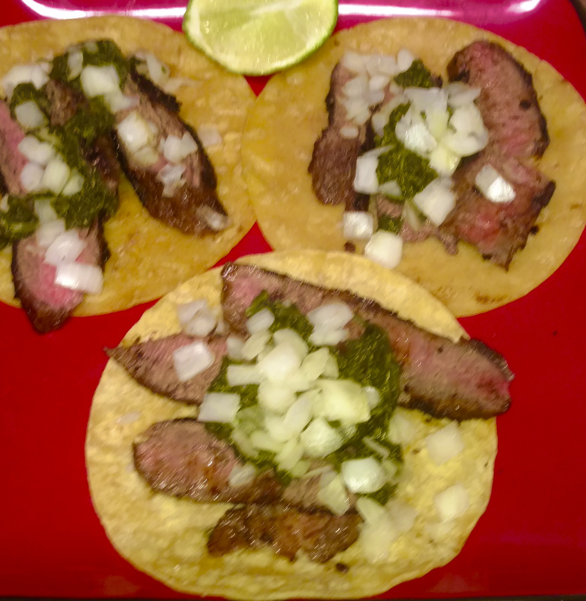

Hector and Natasha's Tacos With A Max Twist!

About These Tacos
In college, Hector and Natasha taught me how to make these delicious tacos!
Cooking Tools and Ingredients For Tacos
Instructions For Your Tacos
Make Your Marinade
- Combine garlic, juice from half a lime, orange juice, pepper, red pepper, salt, and vinegar
- Melt butter in saucepan on low heat
- Add mixture of garlic, juice from half a lime, orange juice, pepper, red pepper, salt, and vinegar to saucepan
- Place Steak in the Large Ziploc bag
- Pour everything in the saucepan into the Ziploc bag
- Make sure the entire steak gets nice and coated
- Let rest for an hour and a half at room temperature
Instructions for Cooking Steak
- Heat up cast iron skillet till its nice and hot
- Place steak in to skillet for 4-4.5 minutes
- Flip steak and cook for an additional 4-4.5 minutes
- Use temperature probe to measure steaks temperature, check out Omaha Steaks Temperature Guide to select your level of doneness
- Once your steak has reached your preferred level of doneness remove the steak from the skillet and let the steak rest for 5-10 minutes
- Don't turn off the heat yet! Your not done with that cast iron yet!
Prepare Your Tacos
- Toss your tortilla in to the cast iron heat that bad boy up, flip and repeat. Do this for all your tortillas
- Once you have heated up all your tortillas, remove the cast iron from the heat and turn off the stove top or fire our whatever you were using
- Slice the steak in to nice thin slices
- Place a few strips of steak in to your tortilla
- Add some dice onions to your taco
- Squeeze a lime on to your taco
- Add some guacamole or some spiced spinach
- Eat up and enjoy!
Return To Main Page
{kind=link}